比完赛也有些时候了,一直没有来得及写这篇文章
最后一篇关于中职网络安全的文章了
第一:
关于数据包分析的
没有数据包的话,去留言版找qq号 要 把博客截图
数据包:Bravo-1.pcapng2.继续查看数据包文件Bravo-1.pcapng，分析出恶意用户通过哪个目录写入的一句话木马，并将该目录名作为FLAG提交：
1.分析Windows 7桌面下的Bravo-1.pcapng数据包文件，通过分析数据包Bravo-1.pcapng找出恶意用户目录扫描的第2个目录名，并将该目录名作为FLAG提交：
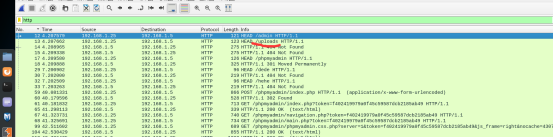
过滤http服务
第二给目录名就是
flag:uploads
2.继续查看数据包文件Bravo-1.pcapng，分析出恶意用户通过哪个目录写入的一句话木马，并将该目录名作为FLAG提交：
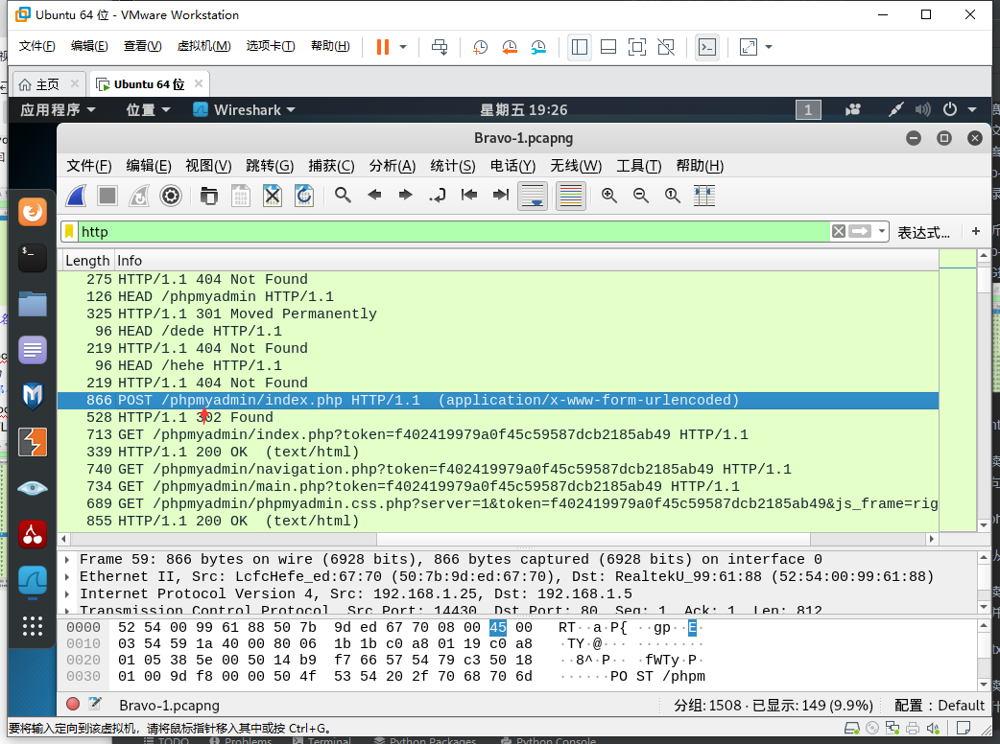
flag:phpmyadmin
注:是从这个目录写入的而不是木马在这个文件里
3.继续查看数据包文件Bravo-1.pcapng分析出恶意用户读取了服务器什么文件，并将该文件名及后缀 作为FLAG提交：
flag:.txt
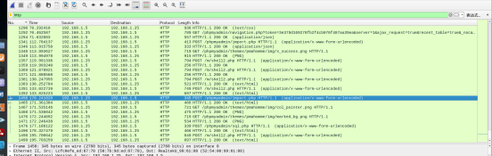
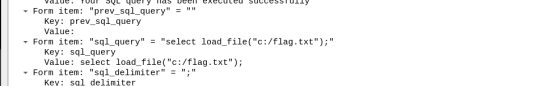
4.继续查看数据包文件Bravo-1.pcapng分析出恶意用户写入一句话木马的路径是什么，并将该路径作为FLAG提交：
flag: c:/phpstudy/www/m/shell2.php
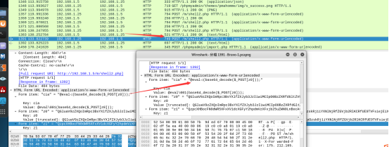
5.继续查看数据包文件Bravo-1.pcapng分析出恶意用户连接一句话木马的密码是什么，并将一句话密码作为FLAG提交：
flag: cia
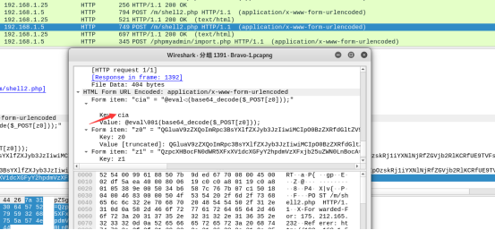
6.继续查看数据包文件Bravo-1.pcapng分析出恶意用户下载了什么文件，并将文件名及后缀作为FLAG提交：
flag: coonect.php
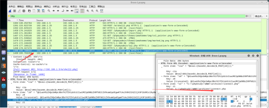
7.继续查看数据包文件Bravo-1.pcapng将Web服务器连接的数据库名作为FLAG提交:
思路:导出http文件包
flag:kingsman
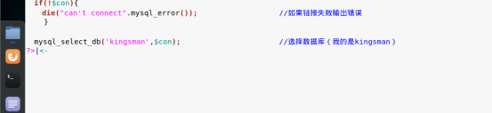
流量包: misc
1.通过本地PC中渗透测试平台Kali访问目标靶机http://xxx.xxx.xxx.xxx:8081(xxx.xxx.xxx.xxx为靶机IP地址,
例如172.16.101.1:8081)下载文件获取流量包。将流量包进行解压，获取流量包中的文件名作为Flag（形式：文件名.文件类型）提交；
输入http://ip地址/
下载数据包
在网站上下载数据包
flag:misc-1.pcapng
2.通过本地PC中渗透测试平台Kali中利用wireshark从服务器场景Windows2003中下载的流量包进行流量包分析，使用HTTP模式下
的过滤表达式过滤HTTP GET方法的流量包，过滤表达式命令作为Flag提交。
flag:
http.request.method==”GET”;
3.根据第2步回显信息从过滤出的流量包中分析，找到flag文件流量的IP地址，并将该HTTP流量包（第1步中下载的流量包）含
flag信息的请求源ip作为Flag提交。
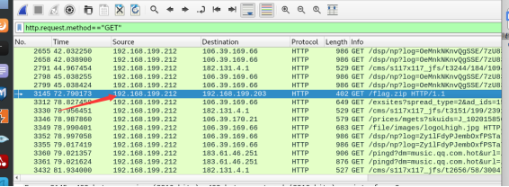
flag:192.168.199.212
4.在渗透测试平台Kali中利用wireshark从包含flag信息的流量包中的IP数据包中找到目标信息文件，并将该文件名作为Flag
（形式：文件名.文件类型）提交。
flag:
flag.txt
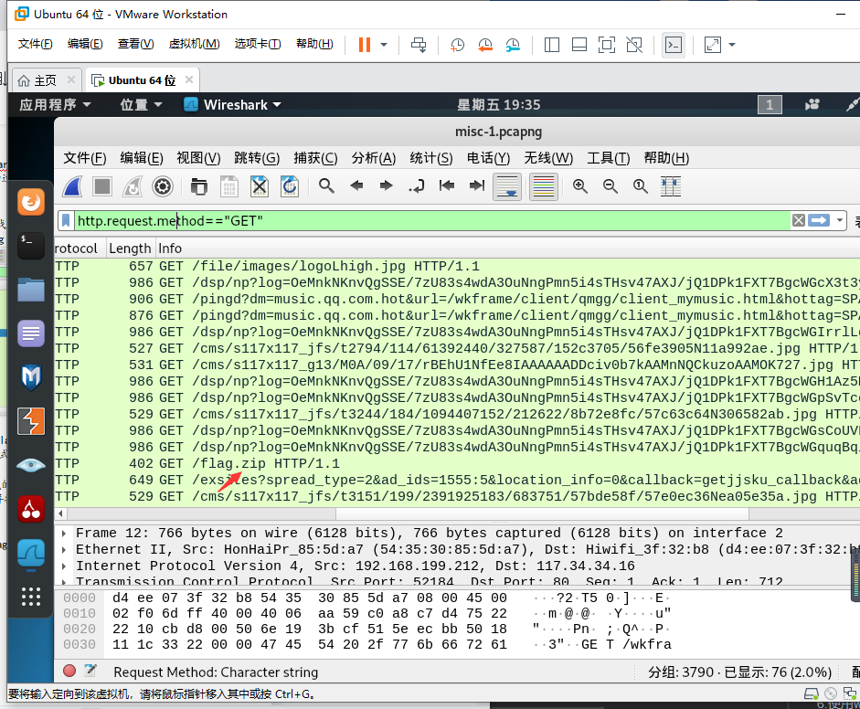
5.在渗透测试平台Kali中使用wireshark分析下载的流量包，并从包含flag信息的GET/POST请求流量中找出响应IP及响应内
容，并将该flag请求的响应IP（流量包中的IP）作为flag提交。
192.168.199.203
6.使用wireshark工具分析响应流量包（第5步flag请求对应的response响应流量数据包）中的数据内容，将该响应数据中的
文件名，作为Flag（形式：文件名.文件类型）提交。
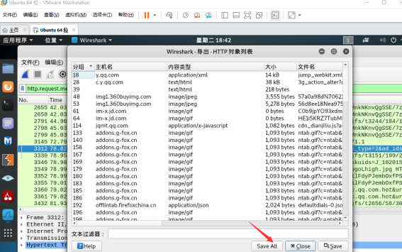
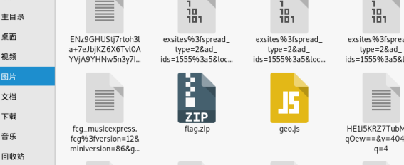
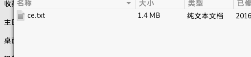
flag:ce.txt
7.使用wireshark工具提取流量包中内容（即第6步响应流量包中的文件内容），将该提取操作必须使用的到的wireshark功能的快捷键作为Flag提交。（xx+xx为Flag提交格式,例如ctrl+alt+F4）。
大佬解析
flag:
Ctrl+H
8.将第7步提取出的文件进行解压，将该文件解压后的文件内容第一行作为flag提交；
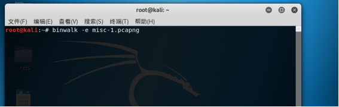
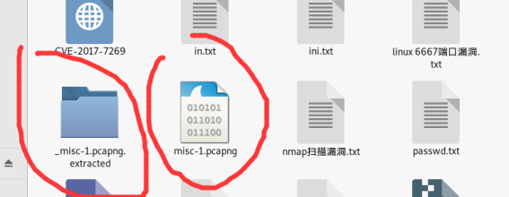
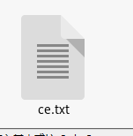
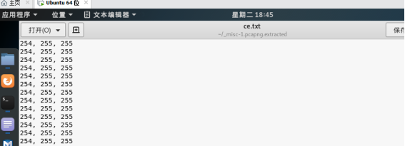
一位大佬做的数据包分析题
看大佬博客
blog.mo60.cn
不写了,太烦了,不想做了,去问他
qq:3348772118
要题,做题 啥的都可以,我做的题都在他哪里
19年的,20年的,市赛,省赛,国赛之类的题我都做过一些,不要客气🤭
我要好好的去陪我对象了,就不碰这题了